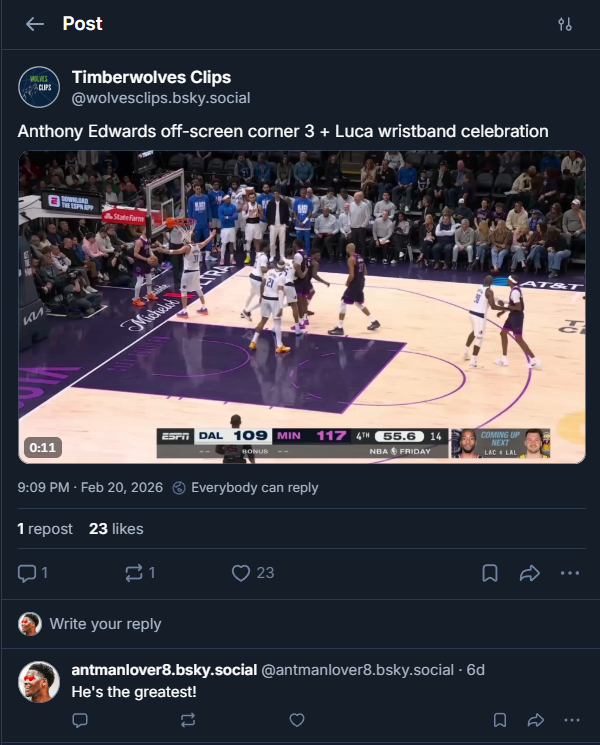
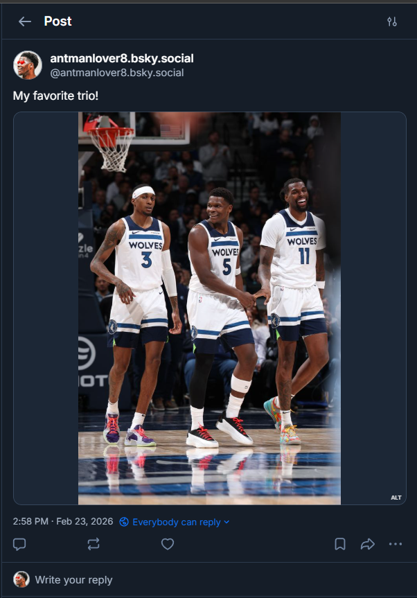
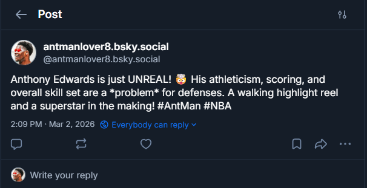

This project explores the intersection of social media and ethical design through a Bluesky bot, showcasing different types of posts and interactions.
Visit the bot on Bluesky: @antmanlover8.bsky.social
Design Rationale: I chose to create an Anthony Edwards fanpage because I am a huge fan of his basketball talent. I believe more people should be exposed to his greatness in the NBA and realize that he isn't too far from becoming the future face of the league. This bot serves as a testament to his skills and potential while exploring the technical capabilities of social media APIs.

Implementation: Text-only posts are the most straightforward interaction with Bluesky. The bot uses the ATProto library to send simple text messages directly to the platform. Each post is packaged and communicated with Bluesky's servers to publish immediately. This allows for quick, real-time engagement with the community.
Design Choice: Text-only posts form the foundation of the bot's interactions. By starting with simple text replies, the bot can engage with other users' posts about Anthony Edwards, creating conversational moments and community participation. This approach prioritizes accessibility and authenticity over visual complexity.

Implementation: Multimedia posts handle image uploads by first reading image files as binary data and uploading them as blobs to Bluesky. The bot then embeds these images in posts alongside text captions. This process combines image assets with text to create richer, more visually engaging content that highlights Anthony Edwards' athletic achievements and moments.
Design Choice: Visual content is more engaging and memorable than text alone. By incorporating high-quality images of Anthony Edwards, the bot can showcase his talent more effectively and attract greater attention from basketball fans. Images also make posts more shareable and likely to appear in users' feeds.

Implementation: This section showcases the integration of Google Gemini AI (external package) with Bluesky. The bot sends prompts to the Gemini API, which generates creative, AI-crafted messages that praise Anthony Edwards' skills and potential. These AI-generated responses are then posted to Bluesky, combining user interaction triggers with external AI capabilities to create dynamic, personalized content.
Design Choice: Integrating generative AI adds sophistication and uniqueness to the bot's posts. Rather than relying solely on pre-written templates, the AI can generate varied, contextually appropriate messages about Anthony Edwards. This approach raises interesting ethical questions about authenticity and AI-generated content on social media while demonstrating the potential for human-AI collaboration in creative expression.
This project explores several ethical dimensions of social media bots: